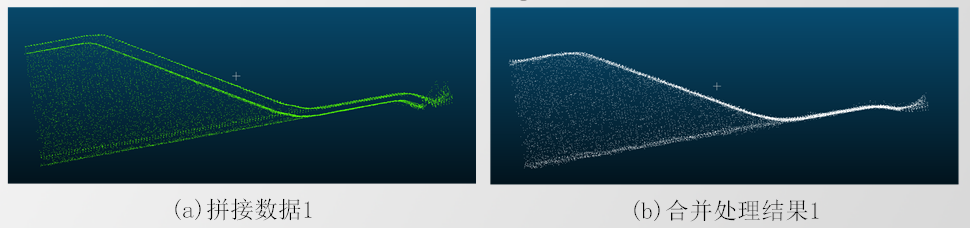
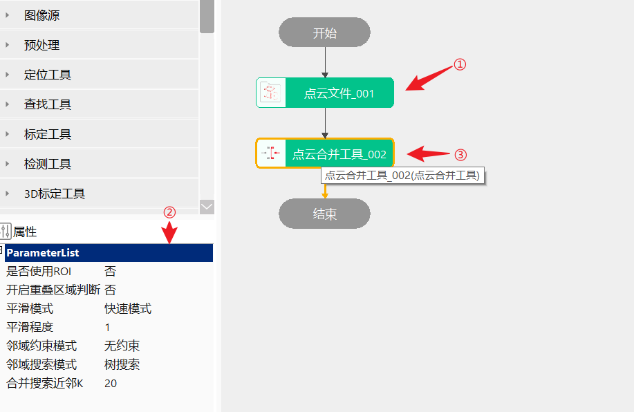

Công cụ gộp đám mây điểm được dùng để loại bỏ hiện tượng phân lớp trong đám mây điểm，tức là xử lý các vùng chồng lặp。
Chủ yếu phục vụ các dự án đo lường đám mây điểm 3D phạm vi lớn，giải quyết hiện tượng phân lớp điểm và vấn đề dư thừa dữ liệu chồng lặp sau khi ghép dữ liệu đám mây điểm đa góc nhìn，công cụ chủ yếu được ứng dụng ở giai đoạn tiền xử lý của dự án đo lường ba chiều。

Không có
Quy trình thực thi công cụ：tải đám mây điểm→thiết lập nhận diện điểm chồng lặp→thiết lập làm mượt điểm chồng lặp và tinh giản gộp điểm chồng lặp→thực thi gộp。

| Lưu ý |
|---|
| 1、Hiệu quả sau khi gộp hiện cần dùng phần mềm bên thứ ba để xem |
| 2、Khi đám mây điểm không có pháp tuyến，công cụ gộp sẽ báo lỗi khi thực thi |
| Tên tham số | Mô tả tham số |
|---|---|
| Có sử dụng ROI hay không | Khi bật sẽ dùng hình hộp chữ nhật để khoanh chọn đám mây điểm |
| Số lượng ROI | Số lượng ROI，phạm vi：[1,50] |
| Chỉ số ROI | ROI hiện tại |
| Bật nhận diện vùng chồng lặp | Có bật nhận diện vùng chồng lặp hay không |
| Chế độ nhận diện vùng chồng lặp | Chia thành số điểm lân cận và khoảng cách điểm - pháp tuyến |
| Ngưỡng khoảng cách | Chỉ định ngưỡng khoảng cách giữa từng điểm truy vấn và điểm lân cận gần nhất；nếu khoảng cách giữa điểm truy vấn và điểm lân cận gần nhất nhỏ hơn ngưỡng khoảng cách và góc kẹp pháp tuyến của hai điểm nhỏ hơn ngưỡng góc kẹp pháp tuyến，thì phán định hai điểm này là điểm chồng lặp；ngược lại là điểm không chồng lặp |
| Ngưỡng khoảng cách - tương đối | Đặt thành ngưỡng tương đối，khi đó ngưỡng khoảng cách là tích của giá trị cài đặt và độ phân giải đám mây điểm |
| Ngưỡng góc kẹp pháp tuyến | Chỉ định ngưỡng góc kẹp giữa pháp tuyến của điểm lân cận gần nhất của từng điểm truy vấn và pháp tuyến của điểm truy vấn；nếu góc kẹp pháp tuyến giữa điểm truy vấn và điểm lân cận gần nhất nhỏ hơn ngưỡng góc kẹp pháp tuyến và khoảng cách giữa hai điểm nhỏ hơn ngưỡng khoảng cách，thì phán định hai điểm này là điểm chồng lặp；ngược lại là điểm không chồng lặp |
| Ngưỡng số điểm lân cận | Chỉ định ngưỡng số điểm trong vùng lân cận của từng điểm truy vấn，nếu số điểm lân cận của điểm truy vấn lớn hơn ngưỡng，thì phán định điểm đó là điểm chồng lặp；ngược lại là điểm không chồng lặp，có thể chọn tự động thiết lập ngưỡng |
| Ngưỡng số điểm lân cận - tự động | Tự động thiết lập ngưỡng |
| Bán kính tìm kiếm lân cận | Chỉ định bán kính tìm kiếm lân cận của từng điểm truy vấn，tức là phạm vi lân cận dùng để thống kê số điểm lân cận |
| Bán kính tìm kiếm lân cận - tương đối | Bán kính tìm kiếm lân cận - tương đối |
| Ngưỡng khoảng cách tương đối | Phạm vi giá trị[0.0001, 1]，giá trị mặc định là0.05；lọc các tư thế tương tự |
| Chế độ làm mượt | Bao gồm chế độ nhanh、chế độ độ chính xác cao và chế độ siêu chính xác；trong đó，chế độ nhanh là làm mượt đám mây điểm dựa trên lọc song phương；chế độ độ chính xác cao là làm mượt đám mây điểm dựa trên nội suy tuyến tính；chế độ siêu chính xác là làm mượt đám mây điểm dựa trên bình phương tối thiểu di động |
| Mức độ làm mượt | Chỉ định số lần lặp làm mượt |
| Chế độ ràng buộc lân cận | Bao gồm không ràng buộc、ràng buộc yếu và ràng buộc mạnh，trong đó，không ràng buộc là không sàng lọc điểm lân cận，tất cả kết quả tìm kiếm lân cận gần được dùng làm điểm lân cận mục tiêu；ràng buộc yếu là sàng lọc các điểm lân cận có góc kẹp với pháp tuyến điểm truy vấn nhỏ hơn 90°；ràng buộc mạnh là sàng lọc các điểm lân cận đồng thời thỏa mãn góc kẹp với pháp tuyến điểm truy vấn nhỏ hơn 90° và nằm trong phạm vi vùng lân cận hình trụ được tạo bởi bán kính ràng buộc lân cận chỉ định |
| Chế độ tìm kiếm lân cận | Bao gồm tìm kiếm lân cận voxel và tìm kiếm cây，nếu chọn tìm kiếm lân cận voxel，thì có thể chỉ định kích thước lưới voxel；nếu chọn tìm kiếm cây，không thể chỉ định kích thước lưới voxel |
| Voxel-X | Phạm vi giá trị là[0.001, 1] |
| Voxel-Y | Phạm vi giá trị là[0.001, 1] |
| Voxel-Z | Phạm vi giá trị là[0.001, 1] |
| K lân cận gần tìm kiếm gộp | Nếu chế độ tìm kiếm lân cận là tìm kiếm cây，giá trị này chỉ định số điểm lân cận gần；nếu chế độ tìm kiếm lân cận là tìm kiếm lân cận voxel，giá trị này chỉ định số điểm lân cận gần tối đa khi tìm kiếm |
| Bán kính ràng buộc lân cận | Dùng để giới hạn phạm vi tìm kiếm lân cận，tạo một phạm vi lân cận hình trụ có kích thước nhất định theo bán kính này |
| Bán kính ràng buộc lân cận - ngưỡng tương đối | Bán kính ràng buộc lân cận - ngưỡng tương đối |
| Bật tính toán song song | Có bật tính toán song song hay không，khi chọn có，thuật toán sẽ bật phương thức tính toán song song OpenMp，có thể nâng cao tốc độ tính toán，nhưng có thể xuất hiện tình trạng thời gian xử lý không ổn định，khi chọn không，thuật toán sẽ tắt tính toán song song OpenMp。 |
| Phần trăm số luồng | Thiết lập phần trăm số luồng của tính toán song song，phạm vi hợp lệ là (0, 0.75]，tương ứng biểu thị phạm vi phần trăm(0%, 75%]。 |
| Tên tham số | Mô tả tham số |
|---|---|
| Dữ liệu đám mây điểm đầu ra | Dữ liệu đám mây điểm sau khi biến đổi mô hình |
| Kết quả thực thi | Tính đúng đắn khi công cụ thực thi |
| Thời gian thực thi | Thời gian cần để công cụ thực thi |
Tham khảo“\Samples\3D\Đám mây điểm\Công cụ gộp đám mây điểm.gvp”。